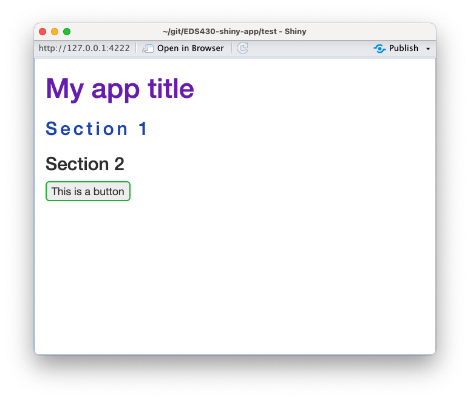
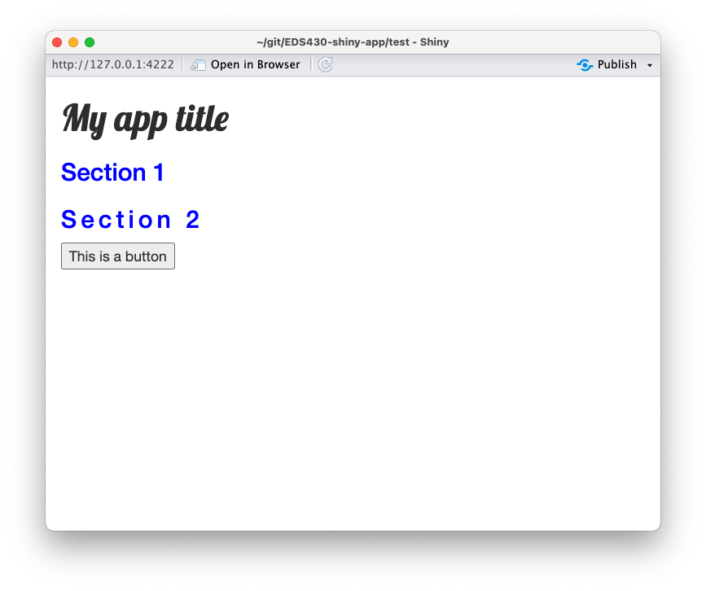
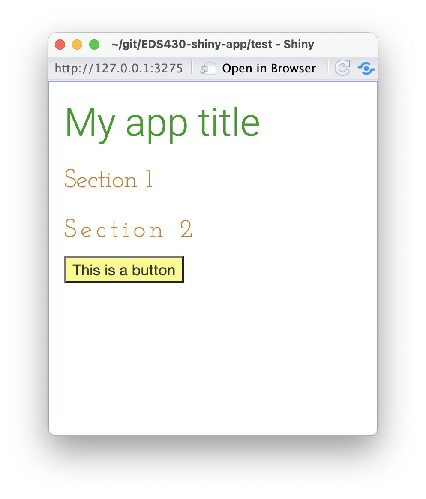
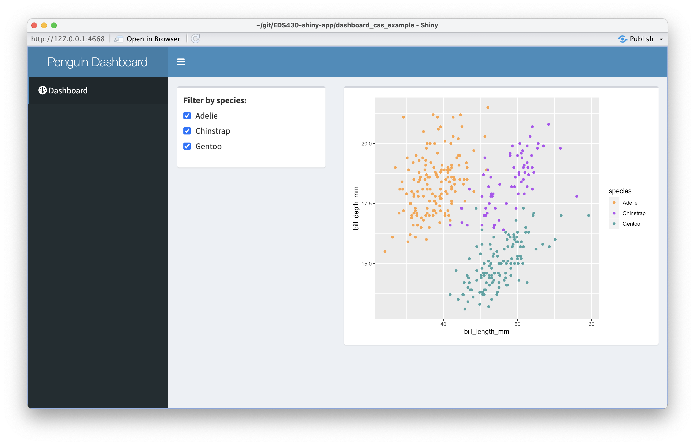
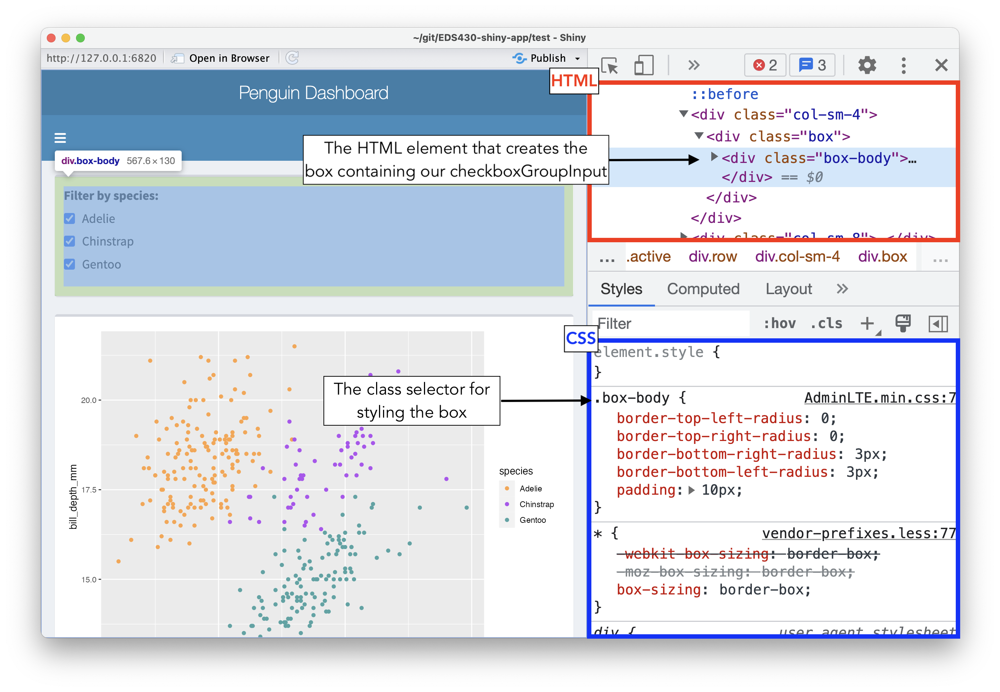
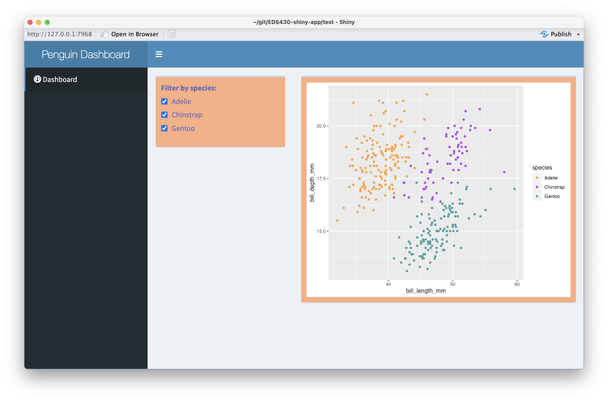
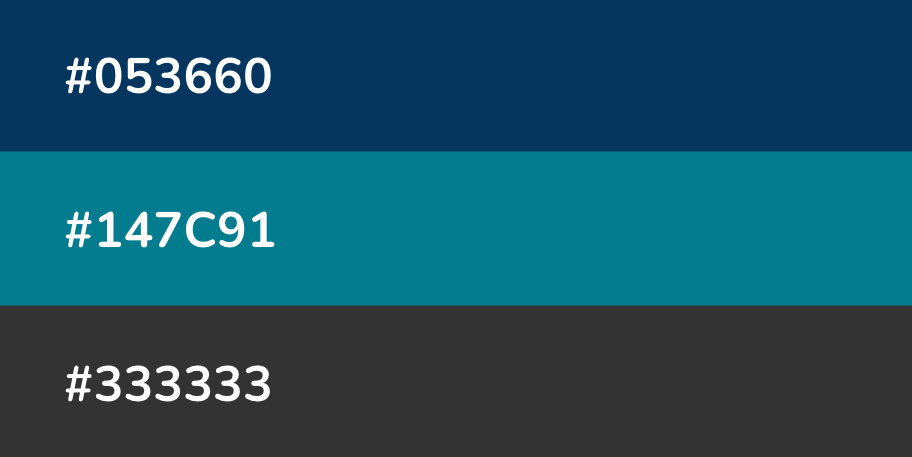
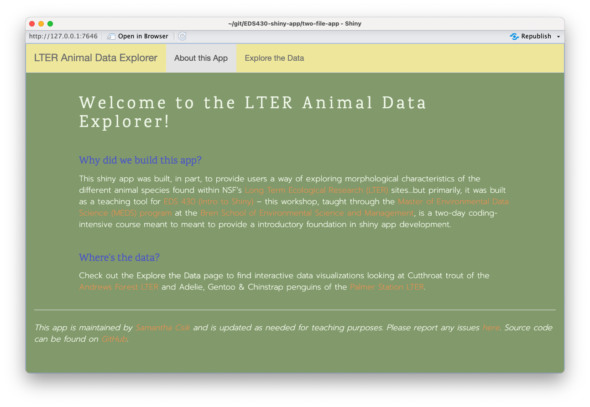

EDS 430: Part 4.3
Styling apps with CSS & Sass
Week 2 | February 2nd, 2024
Styling apps with CSS & Sass
{bslib} & {fresh} are great ways to get started on your app customization journeys, but knowing some CSS & Sass can help you really fine-tune the appearance of your apps
Using Sass & CSS to style Shiny apps & dashboards
You can write your own stylesheets using CSS and Sass to fully customize your apps, from background colors, to font styles, to size and shape of elements, and more. Unlike bslib and fresh, these are languages, meaning they can be a bit more challenging to get started with (but the payoff it big!).
Pros:
applies to any web page (not just shiny apps / dashboards)
allows you to customize pretty much any aspect of your app
can be combined with themes generated using bslib or fresh to fine-tune your app’s styling
Cons:
a steeper learning curve / generally more complex than packages like bslib and fresh
We’ll review a little bit about CSS & Sass, then practice writing and applying custom styling to apps and dashboards.
Resources for a deeper dive
We’ll be doing a rather high-level and quick overview of Sass & CSS today, though I encourage you to check out the Customizing Quarto Websites workshop, which takes a much deeper dive (the information in that workshop is largely applicable here).
W3Schools is my favorite online resource for all-things CSS – in addition to really digestible descriptions and examples, they also offer interactive tutorials to get your hands on updating (and breaking) code (in a safe space, of course).
What even is CSS? Sass?

CSS (Cascading Style Sheets) is a programming language that allows you to control how HTML elements look (e.g. colors, font styles, etc.) on a webpage.

Sass (Syntactically Awesome Stylesheets) is a CSS extension language and CSS preprocessor – meaning Sass needs to be converted (aka compiled) to CSS before it can be interpreted by your web browser.
CSS is a rule-based language
CSS is a rule-based language, meaning that it allows you to define groups of styles that should be applied to particular elements or groups of elements on a web page. For example, “I want all level one headings (<h1> or tags$h1() as written in Shiny) in my app to be green with a bit of extra space between each letter” could be coded as:

Selectors select the HTML element(s) you want to style (e.g. level one headings, <h1>)
Declarations sit inside curly brackets, {}, and are made up of property and value pairs. Each pair specifies the property of the HTML element(s) you’re selecting (e.g. the color property of the element <h1>), and a value you’d like to assign to that property (e.g. green)
A property and it’s corresponding value are separated by a colon, :. Declarations end with a semicolon, ;
There are a variety of CSS selectors – check out some of the basics that will take you far in styling your apps, starting on this slide of the Customizing Quarto Websites workshop.
3 ways to add CSS styling to your apps
You can (1) add styling directly to tags, (2) add CSS rules to your header, and/or (3) build a stylesheet that is applied to your app. Creating a stylesheet is often the preferred approach.
Add styling directly to tags. It’s best not to use a lot of these! It’s easy to lose track of your “in-line” styling in large projects, you can’t reuse rules easily, it’s hard to keep styling consistent, and it’s difficult to implement large stylistic changes.
#..............................setup.............................
library(shiny)
#...............................ui...............................
ui <- fluidPage(
# text color = purple
tags$h1("My app title",
style = "color: #711EBA;"),
# text color = blue; increase space between letters
tags$h3("Section 1",
style = "color: #1E4DBA; letter-spacing: 4px;"),
# no styling
tags$h3("Section 2"),
# increase border thickness and color green; round corners
tags$button("This is a button",
style = "border: 2px solid #1EBA38; border-radius: 5px")
)
#.............................server.............................
server <- function(input, output) {}
#......................combine ui & server.......................
shinyApp(ui, server)
Add CSS rules to your app’s header (tags$head). This is a little bit better than option 1 since it allows for the reuse of rules, however, styles can’t be cached (i.e. saved for future usage when you reopen your app). Note: explore Google fonts and check out this slide for instructions on selecting a font.
#..............................setup.............................
library(shiny)
#...............................ui...............................
ui <- fluidPage(
tags$head(
tags$style("
@import url('https://fonts.googleapis.com/css2?family=Lobster&display=swap');
h1 {font-family: 'Lobster', cursive;}
h3 {color: blue;}
.wide-letters {letter-spacing: 4px;}
"
) # END styles
), # END head
tags$h1("My app title"),
tags$h3("Section 1"),
tags$h3(class = "wide-letters", "Section 2"),
tags$button("This is a button")
)
#.............................server.............................
server <- function(input, output) {}
#......................combine ui & server.......................
shinyApp(ui, server)
Build a stylesheet (a .css file) inside your app’s www/ directory and apply your styles to your app’s header (for shinydashboards, include your header inside dashboardBody(). This is the most ideal approach – it allows for style reuse, caching, and keeps styling contained in one spot. Tip: use touch styles.css in the terminal to create a new .css file.
~/myApp/app.R
#..............................setup.............................
library(shiny)
#...............................ui...............................
ui <- fluidPage(
tags$head(
tags$link(rel = "stylesheet", type = "text/css", href = "styles.css")
),
tags$h1("My app title"),
tags$h3("Section 1"),
tags$h3(class = "wide-letters", "Section 2"),
tags$button("This is a button")
)
#.............................server.............................
server <- function(input, output) {}
#......................combine ui & server.......................
shinyApp(ui, server)~/myApp/www/styles.css
/*import google fonts (Josephine Slab (serif) & Heebo (sans serfi))*/
@import url('https://fonts.googleapis.com/css2?family=Heebo:wght@300&family=Josefin+Slab:wght@300&display=swap');
/* element selectors */
h1 {
font-family: 'Heebo', sans-serif;
color: #179A1F; /* green */
}
h3 {
font-family: 'Josefin Slab', serif;
color: #CA781C; /* orange */
}
button {
background-color: #FCF982; /* yellow */
}
/* class selectors */
.wide-letters {
letter-spacing: 4px;
}
Let’s practice on a small dashboard first:

#........................dashboardHeader.........................
header <- dashboardHeader(
# add title ----
title = "Penguin Dashboard"
) # END dashboardHeader
#........................dashboardSidebar........................
sidebar <- dashboardSidebar(
# sidebarMenu ----
sidebarMenu(
menuItem(text = "Dashboard", tabName = "dashboard", icon = icon("gauge"))
) # END sidebarMenu
) # END dashboardSidebar
#..........................dashboardBody.........................
body <- dashboardBody(
# tabItems ----
tabItems(
# dashboard tabItem ----
tabItem(tabName = "dashboard",
# fluidRow ----
fluidRow(
# input box ----
box(width = 4,
checkboxGroupInput(
inputId = "penguin_species",
label = "Filter by species: ",
choices = c("Adelie", "Chinstrap", "Gentoo"),
selected = c("Adelie", "Chinstrap", "Gentoo")
) # END checkboxGroupInput
), # END input box
# output box ----
box(width = 8,
plotOutput(outputId = "penguin_plot")
) # END output box
), # END fluidRow
) # END dashboard tabItem
) # END tabItems
) # END dashboardBody
#..................combine all in dashboardPage..................
dashboardPage(header, sidebar, body)server <- function(input, output) {
# penguin spp reactive df----
penguin_spp <- reactive({
palmerpenguins::penguins %>%
filter(species %in% input$penguin_species) %>%
select(species, island, bill_length_mm, bill_depth_mm)
}) # END penguin spp reactive df
# plot ----
output$penguin_plot <- renderPlot({
ggplot(penguin_spp(), aes(x = bill_length_mm, y = bill_depth_mm, color = species)) +
geom_point() +
scale_color_manual(values = c("Adelie" = "#FEA346", "Chinstrap" = "#B251F1", "Gentoo" = "#4BA4A4"))
}) # END plot
}What if I want to style an element, but don’t know how to target it?
Oftentimes, you’ll have to do a bit of exploration to determine how to target specific elements for styling. In either your app viewer or web browser, right click on an element of interest and choose Inspect (or Inspect Element) to open up the underlying HTML and CSS. You can make temporary edits to your app (e.g. adding a background color, changing font sizes, etc.) to see how they look first, then copy the appropriate CSS rule into your stylesheet to apply to your app.
Inspect & identify how to update box styling
For example, let’s say I want to change the color of this shinydashboard’s boxes and the color of the box text.
First, we need to determine which type of HTML element creates our box. Right clicking on a box and choosing Inspect Element pulls up the HTML and CSS files underlying the app. Hovering over different parts of the HTML highlights different elements in the UI. The box is highlighted when I hover over <div class="box-body"> – this tells me that boxes are formed using the <div> HTML element and they’re assigned a class called box-body.
Next, we can (temporarily) adjust the CSS rules that style these boxes to see how they work. I can hop down to the CSS file (here, that’s located in the bottom half of my sidebar, but depending on the size of your window / layout, the HTML and CSS might be side-by-side) and find the .box-body class selector. You can add property / value pairs and / or update existing property values to adjust the appearance of our box. Notice that changing the .box-body class selector updates both boxes – upon inspecting the box containing our plot, you’ll notice that it is also of class, box-body. Therefore changes to this class selector will apply to both boxes. This process is purely for testing purposes – refreshing your app will remove any of these changes.
Finally, apply box styling to our dashboard
Now that we know that we can use the box-body class to customize the appearance of our boxes, let’s create a stylesheet and add our new CSS rule. The shinydashboard framework already provides the “standard” styling for boxes, contained in the box-body class. Anything we specify in our own stylesheet will build upon or modify existing styling.
Remember to create a header and link your stylesheet within dashboardBody() to apply our styles.
Check out the complete code for this small example dashboard.

#........................dashboardHeader.........................
header <- dashboardHeader(
# add title ----
title = "Penguin Dashboard"
) # END dashboardHeader
#........................dashboardSidebar........................
sidebar <- dashboardSidebar(
# sidebarMenu ----
sidebarMenu(
menuItem(text = "Dashboard", tabName = "dashboard", icon = icon("gauge"))
) # END sidebarMenu
) # END dashboardSidebar
#..........................dashboardBody.........................
body <- dashboardBody(
# link stylesheet
tags$head(
tags$link(rel = "stylesheet", type = "text/css", href = "styles.css"),
),
# tabItems ----
tabItems(
# dashboard tabItem ----
tabItem(tabName = "dashboard",
# fluidRow ----
fluidRow(
# input box ----
box(width = 4,
checkboxGroupInput(
inputId = "penguin_species",
label = "Filter by species: ",
choices = c("Adelie", "Chinstrap", "Gentoo"),
selected = c("Adelie", "Chinstrap", "Gentoo")
) # END checkboxGroupInput
), # END input box
# output box ----
box(width = 8,
plotOutput(outputId = "penguin_plot")
) # END output box
), # END fluidRow
) # END dashboard tabItem
) # END tabItems
) # END dashboardBody
#..................combine all in dashboardPage..................
dashboardPage(header, sidebar, body)What about Sass?
Okay, we wrote and applied some CSS styling to our apps, but what about Sass? You don’t need to write any Sass at all, however, it provides a number of benefits, including helping to reduce repetition.
For example, let’s say you’re working on an app that uses three primary colors throughout:
You might imagine how often you’ll need to type those HEX codes out as you developing your stylesheet…it can get annoying rather quickly.
We can define and reference Sass variables throughout our stylesheet
Sass allows us to define variables (in the form $var-name: value;) for our colors to reference instead of writing out their HEX codes each time:
If you decide that you actually like a different shade of teal better, you’ll only need to update the hex code where you first define the $teal Sass variable, saving lots of time.
Sass for Shiny workflow
To style apps using both Sass and CSS, you’ll follow this general workflow:
(1) Create a .scss file inside ~/myApp/www/ using the touch command in the terminal (e.g. cd into the appropriate directory, then touch styles.scss). Write both your Sass variables and CSS rules in your .scss file (Note: you can write both Sass & CSS in a .scss file, but only CSS in a .css file)
(2) Compile (i.e. convert) Sass to CSS in global.R (or, if using a one-file app, at the top of your script before you define your UI) using the the sass() function from the {sass} package – this will generate a .css file that our shiny app can actually use. Be sure to save your .css file to your app’s /www directory.
(3) Apply your styles to your app by linking to to your .css file in your app’s header.
Let’s build our Sass file
We’ll practice on our two-file-app – first, remove (or comment out) any reference to your {bslib} or {fresh} themes that we practiced applying earlier so that we’re starting off with just the default shiny styling.
Next, create a .scss file inside ~/two-file-app/www using either the touch command or New Blank File > Text File (I’m calling mine sass-styles.scss). Finally, add Sass variables and CSS rules to sass-styles.scss:
~/two-file-app/www/sass-styles.scss
// import & define fonts vars
@import url('https://fonts.googleapis.com/css2?family=Karma&family=Prompt:wght@200&display=swap');
$font-family-serif: 'Karma', serif;
$font-family-sans-serif: 'Prompt', sans-serif;
// colors vars
$green: #8ca376;
$blue: #525cd1;
$orange: #E59C5E;
$yellow: #f0eaa5;
$white: #f1f7eb;
// css
body {
background-color: $green;
color: $white;
}
h2 {
letter-spacing: 5px;
font-family: $font-family-serif;
}
h4 {
color: $blue;
font-family: $font-family-serif;
}
p {
font-family: $font-family-sans-serif;
}
a {
color: $orange;
}
.navbar-default {
background-color: $yellow;
}
.btn.default.active {
background-color: $green;
}Then, compile Sass to CSS
Because web browsers can only interpret CSS (not Sass), we need to compile our Sass to CSS. To do this, we can use the sass() function from the {sass} package. We can do this in global.R. The sass() function requires two arguments: a sass file input and a file path + named .css file output.
We also need to apply our styles to our app by linking this newly-generated .css file in our app’s header.
Note: After running your app, you should see a sass-styles.css file appear in www/ – it should look quite familiar, except all of our Sass variables have been converted to CSS.
Check out the complete code for App #2 (NOTE: applied themes are commented out).

~/two-file-app/www/sass-styles.css
@import url("https://fonts.googleapis.com/css2?family=Karma&family=Prompt:wght@200&display=swap");
body {
background-color: #8ca376;
color: #f1f7eb;
}
h2 {
letter-spacing: 5px;
font-family: "Karma", serif;
}
h4 {
color: #525cd1;
font-family: "Karma", serif;
}
p {
font-family: "Prompt", sans-serif;
}
a {
color: #E59C5E;
}
.navbar-default {
background-color: #f0eaa5;
}
.btn.default.active {
background-color: #8ca376;
}End part 4.2
Up next: Improving UX / UI
05:00